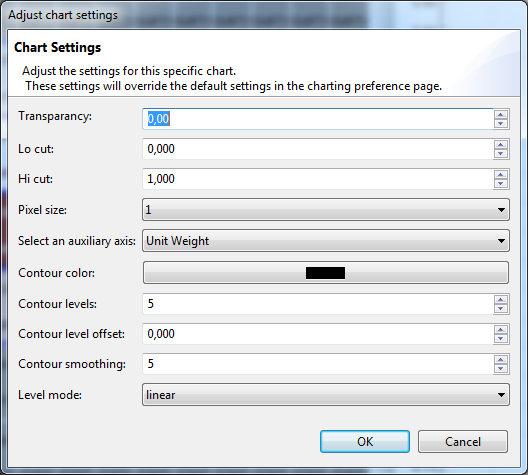

To adjust the Density Chart settings, go to the chart legend and click the Adjust settings button 
. The following dialog will pop up:

| Transparency | This is the opacity for the contour lines. (1 means hidden while 0,0 means completely visible) |
| Lo cut | Select the bottom margin of the window of data that will be used to define the colors. (e.g. If you select a lo cut of 0.1, all data under 10% of the data will be given the lowest color of the shader) |
| Hi cut | Select the upper margin of the window of data that will be used to define the colors. (e.g. If you select a hi cut of 0.9, the 10% of the highest values will be given the highest color value available in the shader) |
| Set pixel size | This is the width of the contour lines. A higher value will give thicker lines. |
| Select an auxiliary axis | This is the axis that will be used to count the intensity |
| Contour color | This is the color in which the contour lines will show |
| Contour Levels | This is the amount of density lines that the contour layer will show. |
| Contour level offset | This an indicator for the distance between the lowest and the highest density. |
| Contour Smoothing | This will smoothen the contour lines for a better contour view. |
| Level mode | This is the way the density will be calculated. Either logarithmic, equal or linear. |
In a contour, you can select whole areas:
- First, give focus to the contour layer by clicking on it in the legend panel.
- Click and/or drag in one or multiple contours.
- Extra regions can be added by control-click.